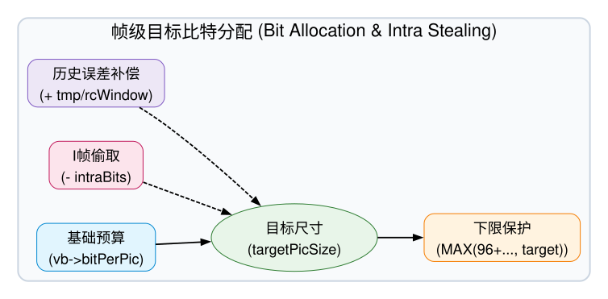
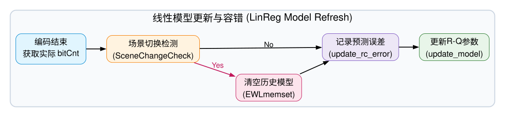

码率控制 (Rate Control) 底层架构拆解
Algorithm & Hardware Co-Design
0. 概念背景：为何必须进行码率控制？
在视频编码系统中，如果编码器“任性”地追求极致且恒定的客观画质（即采用 Constant QP 模式），会导致一个致命系统问题：视频码流的瞬时比特率（Bitrate）将产生不可控的剧烈波动。
- 信源的天然非平稳性 (Source Non-stationarity)：视频流中交织着完全静止的背景帧（极易压缩，体积微小）和充满剧烈运动、复杂纹理的爆炸帧（极难压缩，体积庞大）。这导致纯 CQP 编码输出的码流呈现出极度不规则的 VBR（Variable Bitrate）特征。
- 物理信道的刚性约束 (Channel Constraint)：无论是网络直播的带宽上限，还是物理存储介质（如 DDR 带宽、蓝光光盘读取率）的吞吐能力，物理传输信道通常被建模为一个具有硬性上限的 CBR (Constant Bitrate) 管道。
当极度抖动的“生产端”遇到绝对刚性的“消费端”时，冲突便不可避免。码率控制（Rate Control）的作用，就是作为一个动态的全局协调者，在带宽红线、解码器物理缓存（DPB/VBV）与最终主观画质之间寻找最优解：通过在复杂场景中动态调高 QP（牺牲局部细节），来压制突发的大体积帧，实现“削峰填谷”，最终确保码流能够平稳、安全地穿越受限的物理信道。
1. 核心挑战：HRD Virtual Buffer 物理推演
在深入 C-Model 公式之前，我们通过一个实时动态推演微件来揭示码率控制（RC）的根本物理意义：在信道恒定注入的情况下，如何应对解码器的离散抽取。
1. 网络信道以恒定的速率（如 +5.0%）向 Buffer 中注入比特。
2. 解码器以固定的帧率（如 30fps）从 Buffer 中瞬间抽取一帧的数据块。
3. Underflow (饿死)：如果在“无 RC 模式”下突发复杂场景，帧体积暴增，解码器一次性抽走巨量数据，水位瞬间归零，解码器由于没有完整帧可解而直接卡死。
4. Rate Control 的意义：侦测到水位下降时，强制拉高 QP，压榨画面细节以换取帧体积的骤减，从而让信道注入速率超过抽取速率，硬生生把水位拉回安全线。
2. RC 系统流转图与核心痛点
在底层的 C-Model 中，码率控制绝非一个简单的 $D+\lambda R$ 公式，而是一个极其庞大的前馈分配与反馈修正闭环系统。

🔍 状态机深度解剖：软硬件的数据交互与 QP 控制本质
您提到的“本质是在调整 CU 的 QP 吗？”直击了问题的核心！这个状态机的流转，本质上是软件层面的全局规划与硬件层面的 CU 级微调的精妙配合。具体数据流转与硬件映射如下：
- [步骤 1] 帧级目标分配 (BeforePicRc)：软件侦测
Virtual Buffer的剩余水位，结合 GOP 权重，算出一个总预算rc->targetPicSize（当前帧允许产生的最大比特数）。 - [步骤 2] 初始 QP 推演：软件通过历史的 R-Q 线性模型，将
targetPicSize反推出一个帧级基础 QP (rc->qpHdr)。 - [步骤 3] 物理硬件配置 (HW Register Mapping)：
▶ 核心解答：软件不仅给出了qpHdr，还划定了 CU 调整的物理边界！
软件会将qpHdr写入硬件寄存器（如swreg_pic_qp），作为整帧的基准水位。但为了保护主观画质，软件不会去定死每一个 CU 的 QP，而是将rc->qpMin和rc->qpMax下发给硬件。
在真正的物理编码阶段，硬件引擎 (HW Encode) 会接管控制权，根据画面局部的空间纹理复杂度（如 AQ 自适应量化算法），在这个 Min/Max 的紧箍咒范围内，自行对每一个 CU (Coding Unit) 的最终 QP 进行动态上下浮动 (Delta QP)。 - [步骤 4] 硬件执行与反馈收集 (AfterPicRc)：硬件完成所有 CU 的编码后，汇总吐出一个真实的物理消耗
actualBitCnt。软件读取该值，一方面去真实扣除Virtual Buffer的水位，另一方面计算“预测值与真实值”的误差，用来校准下一步的 R-Q 线性模型（修正斜率linReg.weight）。
极客总结：在这个闭环中，软件 RC 是“战略司令部”（定目标、定基准 qpHdr、定边界 qpMin/Max），而硬件 CU 级控制是“前线指挥官”（基于局部图像特征，在既定预算和边界内打满伤害）。两者通过寄存器完美握手。
为了让这个精密的状态机在极端条件下不崩溃，C-Model 在软件工程上实施了以下三大极客兜底策略：
策略一：Hierarchical GOP 权重分配矩阵 (Temporal Layer Weighting)
在 VideoEncBeforePicRc 中，并非所有的 P/B 帧在分配比特时都是一视同仁的。C-Model 维护了一个极其精确的硬编码数据结构 rc->hRcCtx.weight[gop_size-1][gopPoc] 来执行量化分配。这个权重直接决定了当前帧的物理目标体积（Target Picture Size），其核心分配公式如下：
((float)rc->hRcCtx.weight[gop_size-1][gopPoc] / rc->hRcCtx.tWeight)
公式解析：tWeight 是整个 GOP 的权重总和。该公式意味着每一帧按其 weight 占总权重的比例，来瓜分整个 GOP 的比特大盘。以经典的 GOP Size 4 结构为例：
- I 帧与核心参考帧 (Base Layer)：作为整个 GOP 的绝对基石，算法会赋予其最高权重，例如
weight[3][3] = 12（甚至高达 23）。这意味着它切走了绝大部分的比特预算，以死保画质不崩溃（防止误差传递）。 - 中层参考 B 帧 (Mid-layer B-frame)：只被部分后继帧参考，重要性减半。算法会赋予其次级权重，例如
weight[3][1] = 5，其获得的比特预算直接遭到“腰斩”。 - 非参考 B 帧 (Non-reference B-frame)：处于预测链最末端，完全不被任何人参考。即使其画质烂成马赛克也不会“连累”别人。算法对它们极其无情，直接分配最低权重
weight[3][0] = 3和weight[3][2] = 3，将其预算榨干以节约带宽，达成整体 R-D 最优解。
策略二：基于 Lookahead 的 CRF 复杂度评估 (CRF Blurred Complexity)
当系统开启 CRF (Constant Rate Factor) 模式时，C-Model 会调用 crfQpMapBasedCplx()。为了避免局部画面突变导致 QP 的剧烈震荡，算法结合了 Pass 1 (预分析/Lookahead) 数据并执行了严格的量化衰减：
- 时域指数衰减 (Exponential Moving Average)：每经过一帧，历史积累的复杂度权重减半，即
shortTermCplxCount *= 0.5和prevCplxSum *= 0.5。 - 平滑复杂度计算 (Blurred Complexity)：将当前帧的 Pass 1 消耗 (
pass1CurCost) 累加上去，得到blurredComplexity = shortTermCplxSum / shortTermCplxCount。这一步相当于做了一个带时间衰减因子的低通滤波。 - 非线性 qScale 映射：核心公式为
qScale = pow(blurredComplexity, 1 - 0.6)。其中0.6为核心常数qCompress。这种分数次幂运算保证了当画面复杂度指数级上升时，分配的码率增幅会被非线性“压制”，从而保护整体带宽。 - 最终归一化：算出的
qScale会除以基准常数rateFactorConstant，最终换算为底层物理 QP (rc->qpHdr = qScale2qp(qScale))。
📉 极客案例推演：从绝对静止到瞬间爆炸的平滑过渡
假设画面一直保持静止（成本仅 100），突然在 T0 时刻发生满屏爆炸，pass1CurCost 瞬间暴涨 10 倍（达到 1000）。若无平滑，QP 会瞬间暴跌引起流量雪崩。但在 crfQpMapBasedCplx 算法下：
静止
静止
静止
爆炸(1000)
blurredCplx = (历史积淀 + 1000) / 综合Count
-> 被 T-1~T-3 的低复杂度(100)严重稀释
-> 实际算出仅为约 500 (而非1000)
// Step 2: qCompress 非线性空间折叠
qScale = pow(500, 1 - 0.6)
-> 增幅指数(0.4)把暴涨的复杂度无情压缩
-> QP 仅温和调整，完美避免码流瞬间崩塌！
策略三：两害相权取其轻的强制熔断机制 (Frame Skip)
当信道带宽实在太差，或者历史欠债太多时，即便把 QP 拉到最大（画面打满马赛克），算出来的预测体积依然会导致 Buffer Underflow 怎么办？
在 C-Model 的 PicSkip(rc) 函数中，有一道硬核的底线防护：如果 bitAvailable < skipIncLimit，即可用余额彻底耗尽，编码器会直接把 rc->frameCoded 强行置为 ENCHW_NO，也就是说直接丢弃这一帧，完全不编码，不发送。
正如您所担忧的，直接丢弃一帧数据确实会导致终端播放画面出现明显的物理卡顿 (Stuttering/掉帧)。但在系统工程中，这是一个“两害相权取其轻”的残酷决定：
- 如果不丢帧 (触发 Underflow 饿死)：解码器按照正常时序抽取数据时，发现 Buffer 被抽干了。此时不仅画面彻底卡死（Freeze），底层硬件解码流水线会直接崩溃报错，甚至会导致后续长达数秒的音视频严重不同步 (A/V Sync Loss)。
- 果断丢帧 (触发 Frame Skip 止损)：当前帧被编码端物理抹除。解码端由于没有收到新帧，会自动复用前一帧画面 (Frame Repeat)，表现为视觉上的顿挫。但在这一帧的时间空隙里，信道源源不断注入的恒定比特被纯攒了下来（因为该帧抽取量为 0）。利用这个时间差，系统成功给濒临干涸的 Buffer 强行“续命回血”！
极客论断：宁可牺牲体验让观众感到一瞬间的“掉帧卡顿”，也绝对不允许整个解码播放器发生不可逆的物理宕机。这就是架构设计中舍车保帅的终极防线。
3. 帧级目标比特分配 (BeforePicRc)
在 `VideoEncBeforePicRc` 函数中，算法的第一步并不是盲目计算 QP，而是极其精打细算地盘点家底，得出当前帧究竟能花多少比特（`targetPicSize`）。

在代码中，`targetPicSize` 的核心组装公式如下：
rc->targetPicSize = vb->bitPerPic - intraBits + DIV(tmp, rcWindow);rc->targetPicSize = MAX(96 + rc->ctbRows * rc->ctbSize, rc->targetPicSize);
这个公式背后隐藏着极其深厚的算法-硬件协同设计哲学：
- `vb->bitPerPic` (基础预算)：如果世界是和平的，每一帧平分带宽，这就是它的基础零花钱。
- `- intraBits` (I 帧劫持惩罚)：I 帧由于没有参考帧，体积必然极其庞大。在 C-Model 中，I 帧会提前透支后续 P 帧的预算。因此每一个 P 帧在计算自己预算时，都要默默扣掉一部分用来“替 I 帧还债”的
intraBits。 - `+ DIV(tmp, rcWindow)` (历史误差补偿)：之前的帧如果省吃俭用了（或超支了），其总误差被存在 `tmp` 里。我们不能要求当前这一帧“一口气还清所有债”，这会导致画面质量瞬间崩塌（QP 剧烈跳动）。因此我们把它平摊到一个滑动窗口
rcWindow里慢慢消化。 - 下限保护 (MAX 96...)：即便上一帧超支再严重，预算也不能扣成负数。代码强制保底（仅发送全 Skip 块所需的 96 bit 极小开销）。
4. R-Q 线性回归模型刷新 (AfterPicRc)
当硬件物理编码（HW Encode）完成后，实际产生的比特流（`byteCnt`）可能和预测值大相径庭。此时 `VideoEncAfterPicRc` 登场，它必须为下一次预测做好模型维护。

在底层算法中，Rate (码率) 与 QP 之间呈现非线性倒数关系。C-Model 维护了一组线性回归参数 (`a1, a2`)，并采用了一套激进但可靠的容错状态机：
如果编码器突然从静态黑板切到了爆炸场景，旧的 R-Q 历史模型将给出完全错误的 QP 指导，导致画面瞬间模糊或码率爆表。
代码逻辑：
VideoEncAfterSceneChangeCheck(rc, ...)。一旦探测到场景剧烈切换，C-Model 将毫不犹豫地执行 EWLmemset 瞬间清空整个线性回归模型历史（重置 weight），迫使系统在下一帧使用全新的基准重新收敛，避免被历史错误数据拖死。